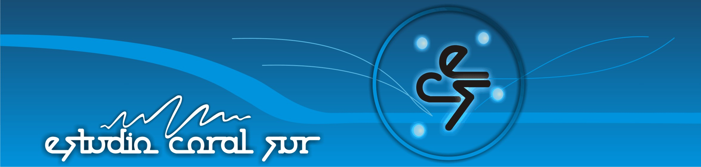
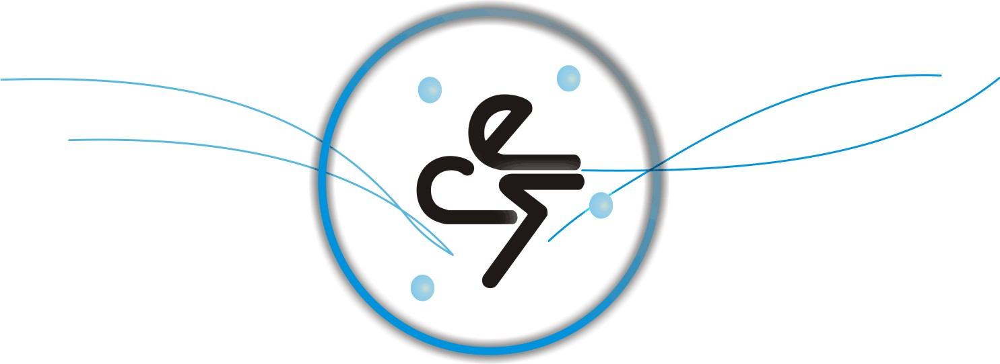
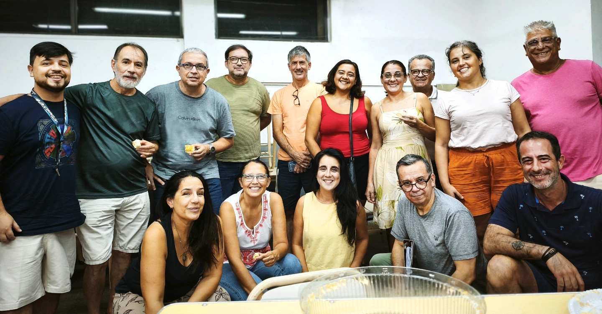
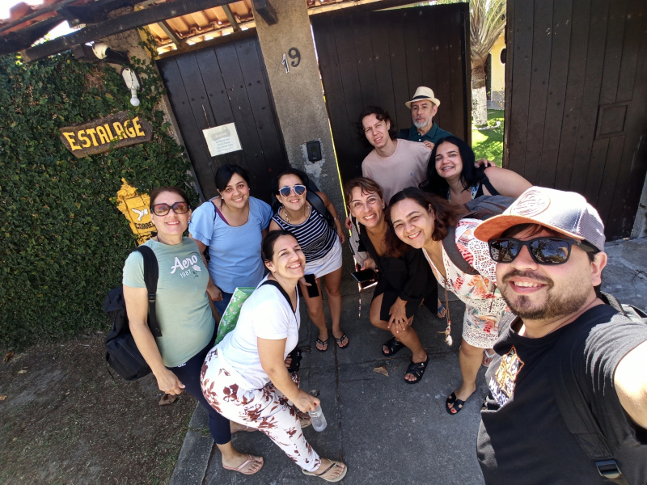
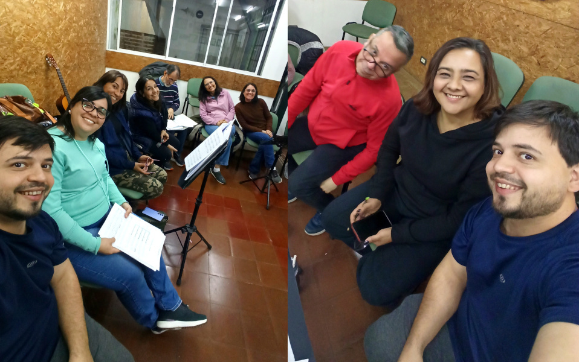

30 años de excelencia coral
Iniciamos actividades en el año 1996, como coro vocacional. Bajo la dirección del "Maestro Néstor Rodríguez", desarrollamos nuestra actividad coral marcada por la calidad vocal, la fina selección del repertorio y la particular disposición de los coreutas en las presentaciones
Ésta larga trayectoria musical recorrió escenarios de la Provincia de Misiones, del país y de países limítrofes como Paraguay y Brasil, participando en encuentros internacionales como el de Cabo Frío, Maringá, Curitiba, Gramado, Juiz de Fora y Encarnación en repetidas ocasiones siempre con desempeños notables y dejando bien representada la tradición coral de la Argentina.
Actualmente y desde el año 2022 tras un breve receso, ha restablecido la dinámica de ensayos preparandose para eventos puntuales e invitaciones en el ámbito nacional e internacional, con repertorio especialmente constituído por musica folclorica de grande arregladores
Para éste 2026 tenemos el plan de participar en el Encuentro Internacional de coros de Arraial de Cabo (Rio de Janeiro - Brasil) y de la celebración de los 30 años del Grupo "Cobra Coral" de Maringá (Estado de Paraná - Brasil) a propósito necesitamos ayuda de la comunidad para poder solventar los gastos que demanden éstas actividades.



Nuestra actividad está marcada por la calidad vocal y la innovación en las presentaciones.
A lo largo de nuestra trayectoria hemos recorrido escenarios de Misiones, Argentina, Paraguay y Brasil. Manteniendo siempre un equilibrio en la selección del repertorio, desde polifonía sacra hasta MPB y trova cubana.
Actualmente nos preparamos con obras de Camilo Matta, Hugo de la Vega y Damián Sanchez. Ayúdanos a representar a la tierra colorada en Arraial do Cabo y Maringá.
Alias para donar: estudio.coral.sur